Chapter 3 Variables
library(data.table)
set.seed(4)
d <- data.table(date=seq.Date(
from=as.Date("2000-01-01"),
to=as.Date("2018-12-31"),
by=1))
d[,year:=as.numeric(format.Date(date,"%G"))]
d[,week:=as.numeric(format.Date(date,"%V"))]
d[,month:=as.numeric(format.Date(date,"%m"))]3.1 Showing that tscount::tsglm gets the same results as MASS::glmmPQL
library(MASS)
correlatedError <- as.numeric(arima.sim(model=list("ar"=c(-0.9)), n=1000, rand.gen = rnorm))
pacf(correlatedError) # this is for AR
acf(correlatedError) # this is for MA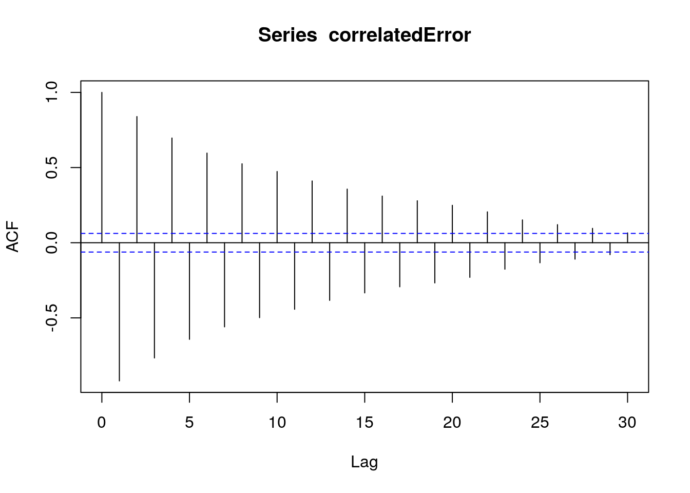
d <- data.frame(correlatedError)
d$independentError <- rnorm(nrow(d))
d$x <- rnorm(nrow(d))
d$yCorrelated <- 2*d$x+d$correlatedError
d$yIndependent <- 2*d$x+d$independentError
d$ID <- 1
d$time <- 1:nrow(d)
summary(lm(yIndependent~x,data=d))##
## Call:
## lm(formula = yIndependent ~ x, data = d)
##
## Residuals:
## Min 1Q Median 3Q Max
## -3.3514 -0.6303 -0.0423 0.6729 2.7880
##
## Coefficients:
## Estimate Std. Error t value Pr(>|t|)
## (Intercept) 0.01730 0.03125 0.554 0.58
## x 2.04791 0.03185 64.291 <2e-16 ***
## ---
## Signif. codes: 0 '***' 0.001 '**' 0.01 '*' 0.05 '.' 0.1 ' ' 1
##
## Residual standard error: 0.9881 on 998 degrees of freedom
## Multiple R-squared: 0.8055, Adjusted R-squared: 0.8053
## F-statistic: 4133 on 1 and 998 DF, p-value: < 2.2e-16summary(fit <- lm(yCorrelated~x,data=d))##
## Call:
## lm(formula = yCorrelated ~ x, data = d)
##
## Residuals:
## Min 1Q Median 3Q Max
## -7.0008 -1.7667 0.0284 1.7580 6.8255
##
## Coefficients:
## Estimate Std. Error t value Pr(>|t|)
## (Intercept) -0.01911 0.07878 -0.243 0.808
## x 1.92556 0.08029 23.983 <2e-16 ***
## ---
## Signif. codes: 0 '***' 0.001 '**' 0.01 '*' 0.05 '.' 0.1 ' ' 1
##
## Residual standard error: 2.49 on 998 degrees of freedom
## Multiple R-squared: 0.3656, Adjusted R-squared: 0.365
## F-statistic: 575.2 on 1 and 998 DF, p-value: < 2.2e-16pacf(residuals(fit)) # this is for AR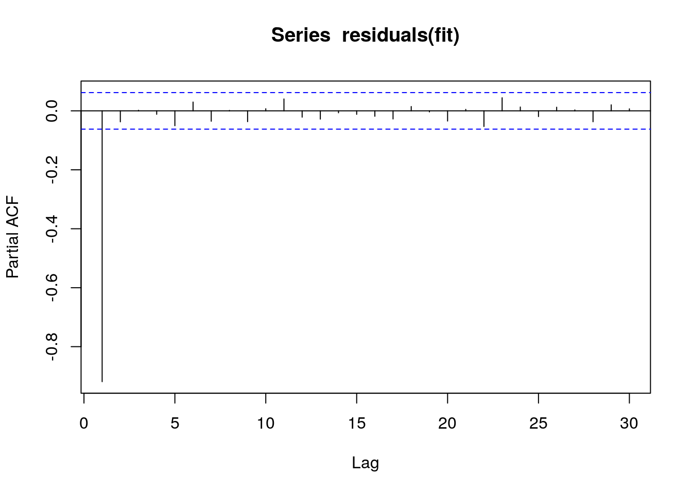
acf(residuals(fit)) # this is for MA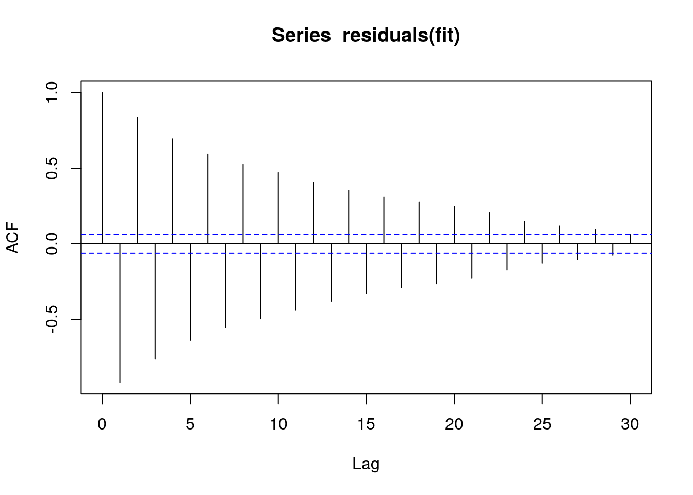
# independent data, no correlation structure needed
fit <- MASS::glmmPQL(yIndependent ~ x, random = ~ 1 | ID,
family = gaussian, data = d,
correlation=nlme::corAR1())## iteration 1## iteration 2summary(fit)## Linear mixed-effects model fit by maximum likelihood
## Data: d
## AIC BIC logLik
## NA NA NA
##
## Random effects:
## Formula: ~1 | ID
## (Intercept) Residual
## StdDev: 2.495365e-05 0.9871021
##
## Correlation Structure: AR(1)
## Formula: ~1 | ID
## Parameter estimate(s):
## Phi
## -0.03660519
## Variance function:
## Structure: fixed weights
## Formula: ~invwt
## Fixed effects: yIndependent ~ x
## Value Std.Error DF t-value p-value
## (Intercept) 0.0172725 0.03013223 998 0.57322 0.5666
## x 2.0503135 0.03179645 998 64.48247 0.0000
## Correlation:
## (Intr)
## x -0.024
##
## Standardized Within-Group Residuals:
## Min Q1 Med Q3 Max
## -3.39821947 -0.64117533 -0.04241725 0.68103536 2.82200314
##
## Number of Observations: 1000
## Number of Groups: 1pacf(residuals(fit, type = "response")) # this is for AR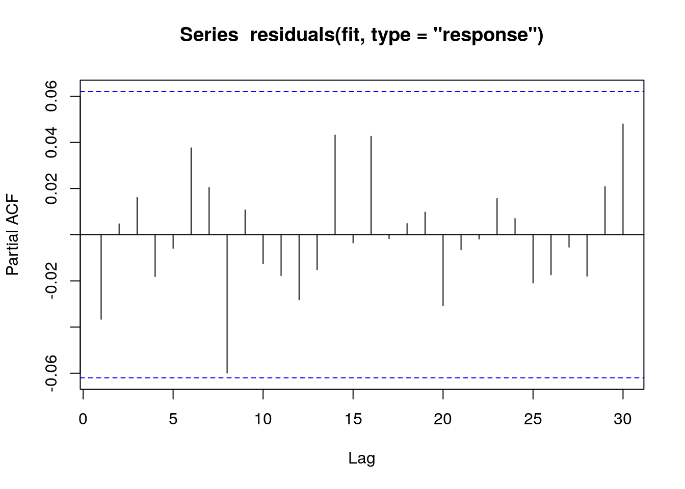
acf(residuals(fit, type = "response")) # this is for MA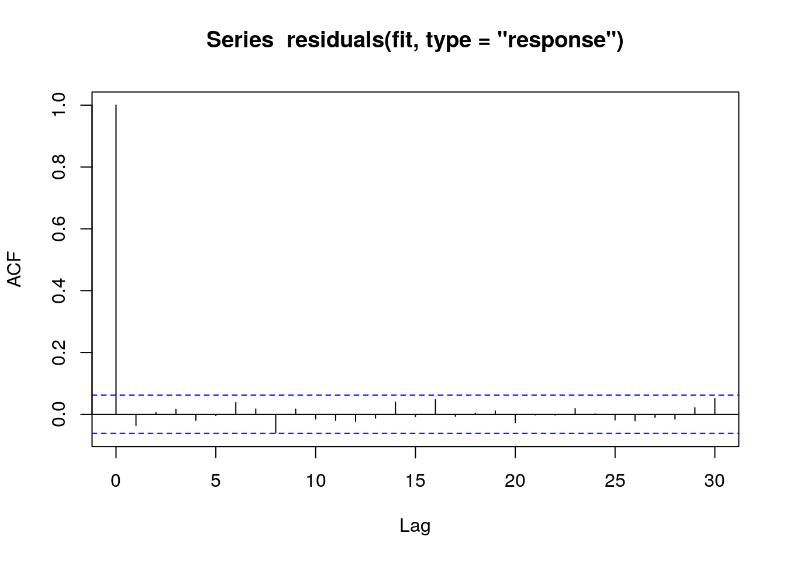
pacf(residuals(fit, type = "normalized")) # this is for AR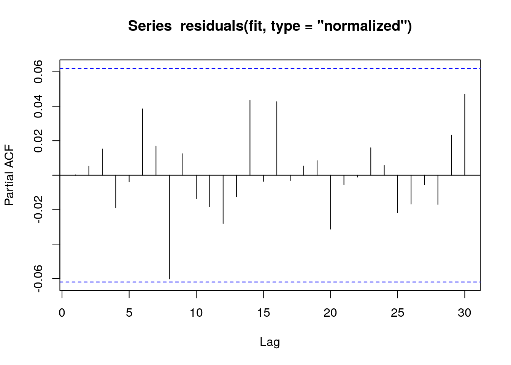
acf(residuals(fit, type = "normalized")) # this is for MA# dependent data, needs correlation structure, no correlation structure
fit <- MASS::glmmPQL(yCorrelated ~ x, random = ~ 1 | ID,
family = gaussian, data = d)## iteration 1summary(fit)## Linear mixed-effects model fit by maximum likelihood
## Data: d
## AIC BIC logLik
## NA NA NA
##
## Random effects:
## Formula: ~1 | ID
## (Intercept) Residual
## StdDev: 8.146024e-05 2.487962
##
## Variance function:
## Structure: fixed weights
## Formula: ~invwt
## Fixed effects: yCorrelated ~ x
## Value Std.Error DF t-value p-value
## (Intercept) -0.0191054 0.07877601 998 -0.242528 0.8084
## x 1.9255600 0.08028715 998 23.983415 0.0000
## Correlation:
## (Intr)
## x -0.023
##
## Standardized Within-Group Residuals:
## Min Q1 Med Q3 Max
## -2.81387655 -0.71009369 0.01140182 0.70661168 2.74339790
##
## Number of Observations: 1000
## Number of Groups: 1pacf(residuals(fit, type = "response")) # this is for AR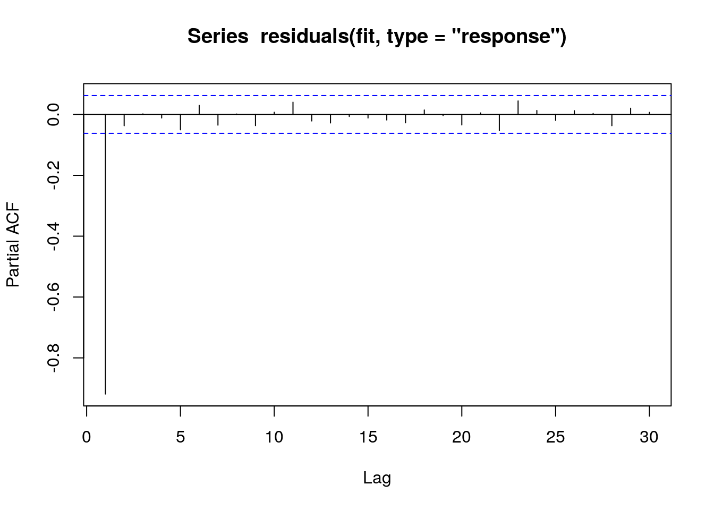
acf(residuals(fit, type = "response")) # this is for MA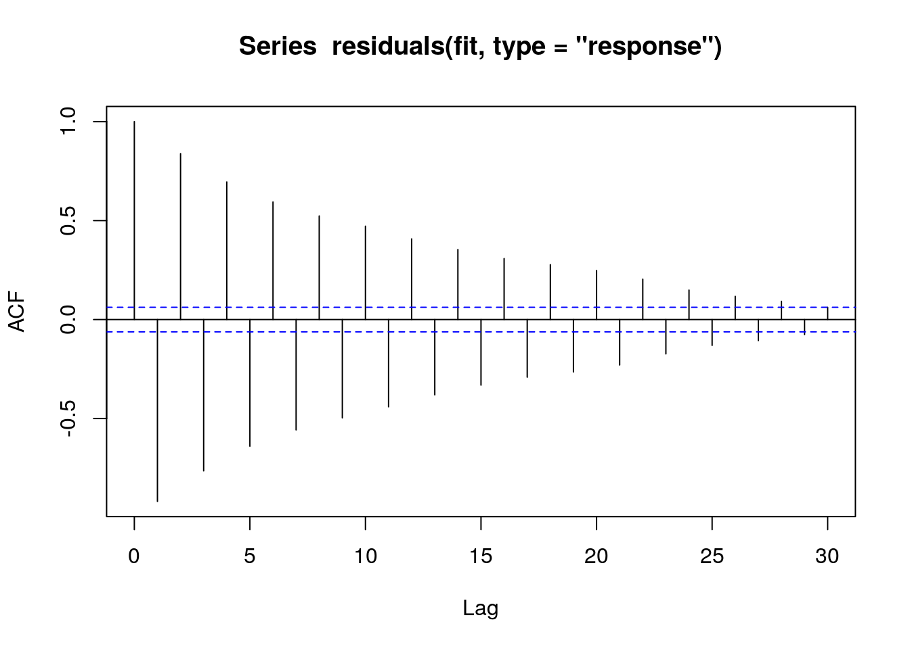
pacf(residuals(fit, type = "normalized")) # this is for AR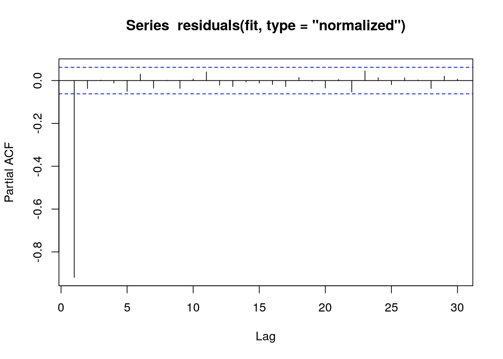
acf(residuals(fit, type = "normalized")) # this is for MA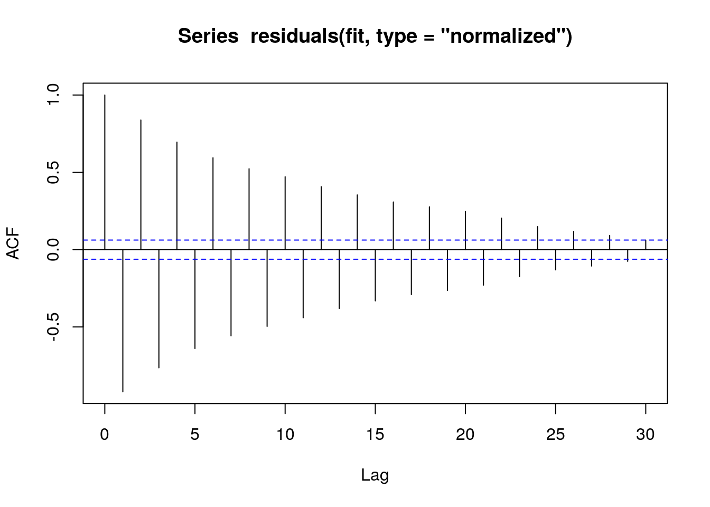
# dependent data, correct correlation structure
fit <- MASS::glmmPQL(yCorrelated ~ x, random = ~ 1 | ID,
family = gaussian, data = d,
correlation=nlme::corAR1())## iteration 1
## iteration 2summary(fit)## Linear mixed-effects model fit by maximum likelihood
## Data: d
## AIC BIC logLik
## NA NA NA
##
## Random effects:
## Formula: ~1 | ID
## (Intercept) Residual
## StdDev: 0.0003556227 2.497616
##
## Correlation Structure: AR(1)
## Formula: ~1 | ID
## Parameter estimate(s):
## Phi
## -0.9212408
## Variance function:
## Structure: fixed weights
## Formula: ~invwt
## Fixed effects: yCorrelated ~ x
## Value Std.Error DF t-value p-value
## (Intercept) -0.0230998 0.01602727 998 -1.44128 0.1498
## x 1.9716201 0.02291353 998 86.04612 0.0000
## Correlation:
## (Intr)
## x -0.032
##
## Standardized Within-Group Residuals:
## Min Q1 Med Q3 Max
## -2.771949942 -0.705001123 0.002629747 0.706947699 2.712722541
##
## Number of Observations: 1000
## Number of Groups: 1pacf(residuals(fit, type = "response")) # this is for ARacf(residuals(fit, type = "response")) # this is for MApacf(residuals(fit, type = "normalized")) # this is for AR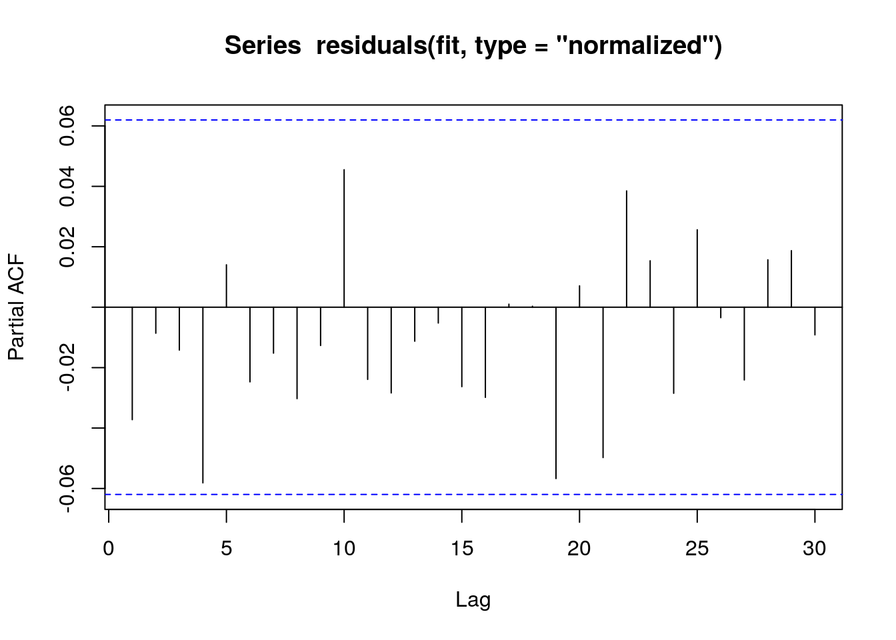
acf(residuals(fit, type = "normalized")) # this is for MA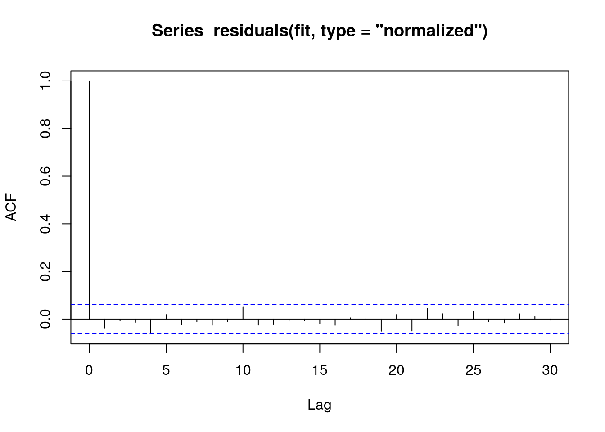
library(MASS)
bacteria$x <- 1
fit <- glmmPQL(as.numeric(y) ~ trt + I(week > 2), random = ~ 1 | x,
family = poisson, data = bacteria)## iteration 1acf(residuals(fit,type="normalized"))
pacf(residuals(fit,type="normalized"))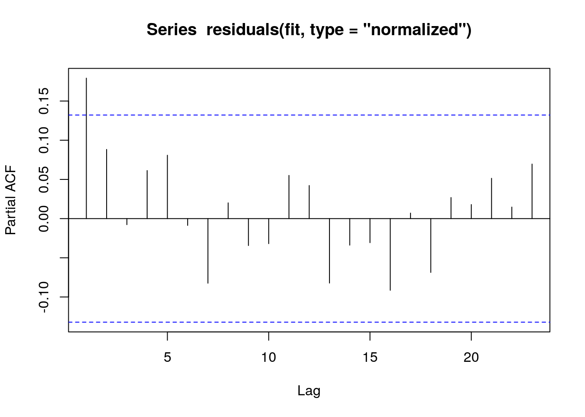
bacteria$x <- 1
fit <- glmmPQL(as.numeric(y) ~ trt + I(week > 2), random = ~ 1 | x,
family = poisson, data = bacteria,
correlation=nlme::corAR1())## iteration 1## iteration 2acf(residuals(fit,type="normalized"))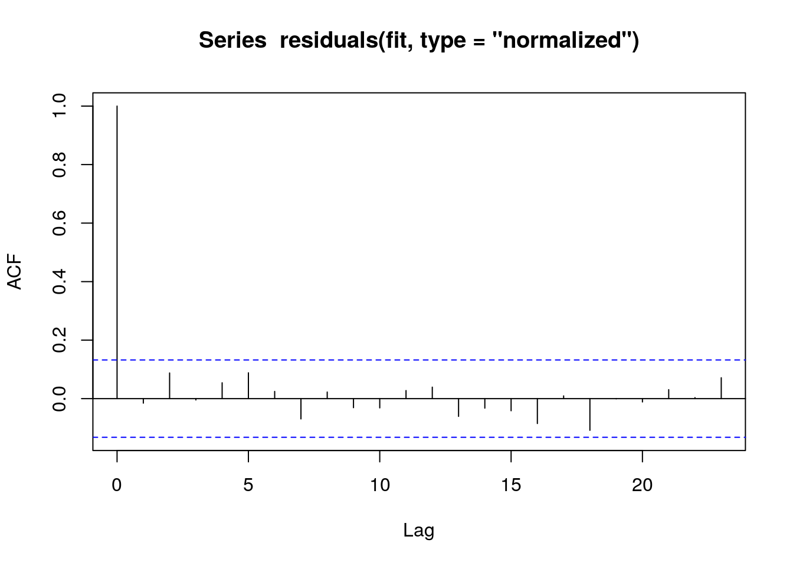
pacf(residuals(fit,type="normalized"))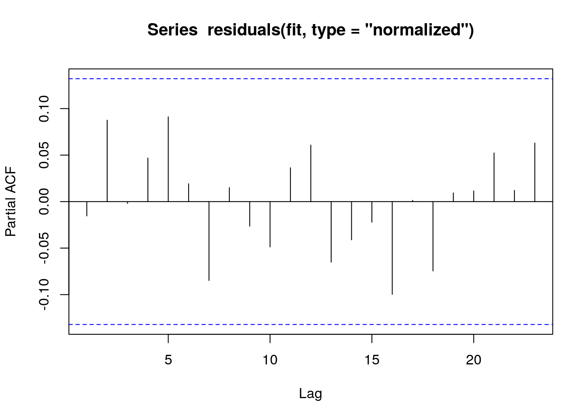
fit <- glmmPQL(as.numeric(y) ~ trt + I(week > 2), random = ~ 1 | ID,
family = poisson, data = bacteria)## iteration 1
## iteration 2## iteration 3acf(residuals(fit,type="normalized"))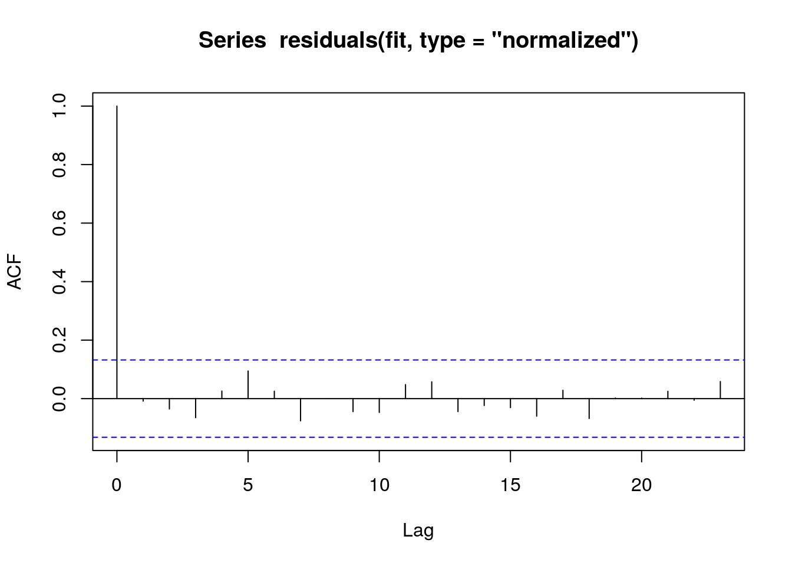
pacf(residuals(fit,type="normalized"))
fit <- glmmPQL(as.numeric(y) ~ trt + I(week > 2), random = ~ 1 | ID,
family = poisson, data = bacteria,
correlation=nlme::corAR1(form=~ 1 | ID))## iteration 1## iteration 2## iteration 3## iteration 4acf(residuals(fit,type="normalized"))
pacf(residuals(fit,type="normalized"))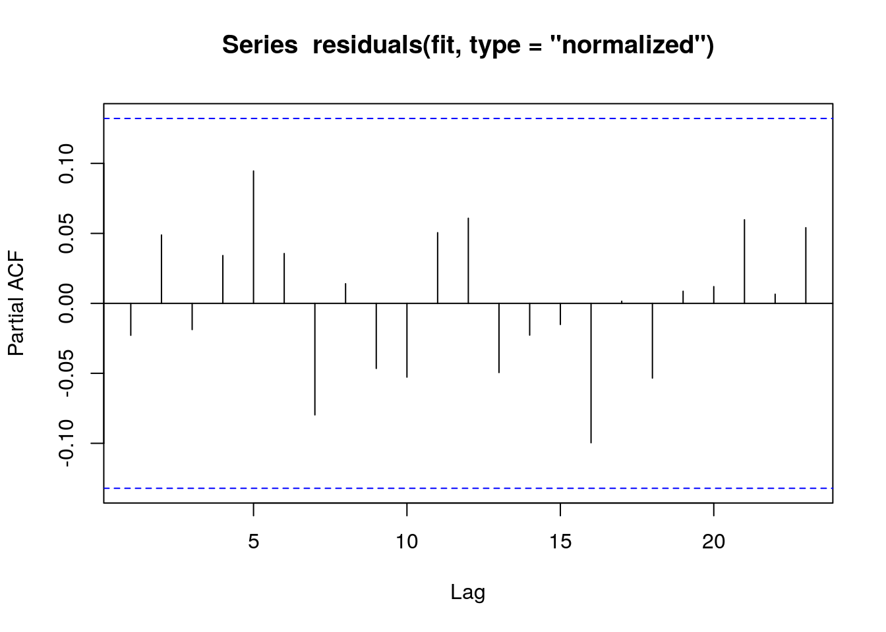